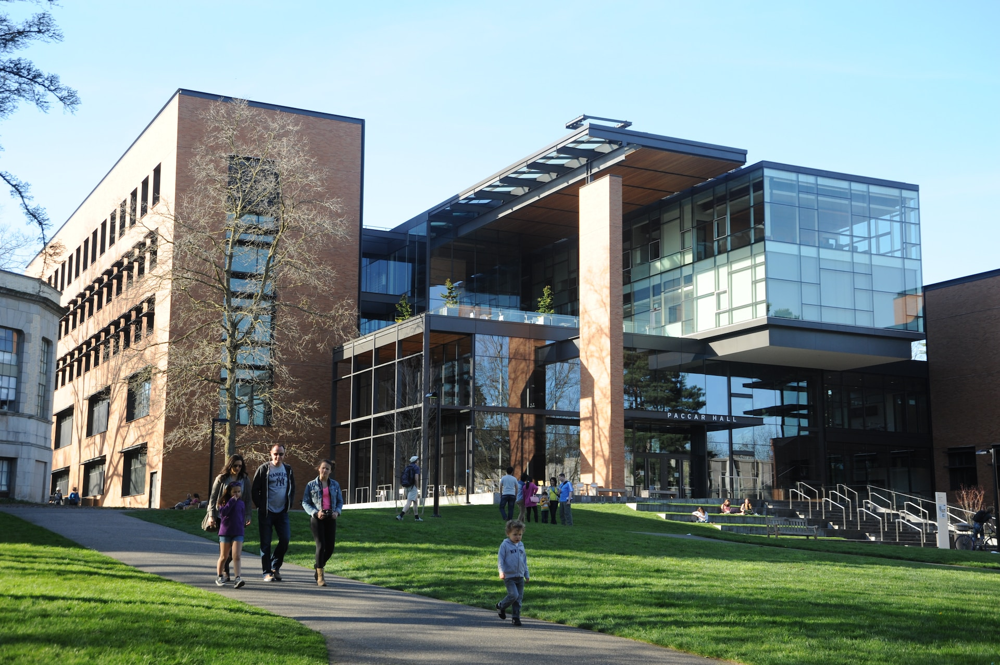

Lokasi Kampus
Kampus kami memiliki 3 tempat berbeda. Tentu saja dengan struktur bangunan yang bagus dan besar

JAKARTA

BANDUNG

Universitas Royal Galaxy adalah perguruan tinggi swasta terbesar yang ada di Indonesia maupun didunia,
Universitas Royal Galaxy menjadi perguruan tinggi swasta bereputasi internasional
Kampus kami memiliki 3 tempat berbeda. Tentu saja dengan struktur bangunan yang bagus dan besar
Setiap fasilitas di URG ini memiliki peran penting dalam membentuk pengalaman belajar yang komprehensif dan
mendukung
pertumbuhan akademik serta pengembangan sosial mahasiswa di lingkungan URG.

Ruang yang dilengkapi dengan koleksi buku, jurnal, dan referensi penting untuk penelitian dan pembelajaran.
Perpustakaan di URG bukan hanya sekadar tempat untuk meminjam buku. Ini adalah inti dari sumber daya ilmiah yang luas, menampung koleksi buku, jurnal, referensi, dan sumber daya digital yang sangat penting untuk mendukung kurikulum akademik. Tidak hanya itu, perpustakaan juga menjadi tempat bagi mahasiswa dan staf untuk melakukan penelitian, membaca, dan belajar di lingkungan yang tenang.

Tempat untuk acara-acara besar, seperti seminar, konferensi, atau pertemuan besar lainnya.
Auditorium di URG sering menjadi pusat kegiatan akademik dan budaya. Dengan kapasitas yang besar, ini menjadi tempat untuk seminar, konferensi, ceramah tamu, pertunjukan seni, dan acara besar lainnya. Fasilitas audiovisual yang canggih dan desain yang ergonomis memastikan pengalaman yang nyaman dan informatif bagi semua peserta.
Ruang dilengkapi dengan perangkat keras dan perangkat lunak terbaru untuk praktik pengajaran dalam bidang teknologi dan komputasi.
Lab komputer merupakan ruang yang dilengkapi dengan teknologi terbaru untuk mendukung pembelajaran dalam bidang teknologi dan komputasi. Di sini, mahasiswa dapat bereksperimen, mengembangkan proyek, dan mendapatkan keterampilan praktis dalam penggunaan perangkat lunak dan perangkat keras yang relevan dengan industri.

Ruang-ruang untuk kegiatan pembelajaran, biasanya dilengkapi dengan peralatan presentasi dan fasilitas pendukung lainnya.
Ruang kelas di URG dirancang untuk memfasilitasi pengajaran yang interaktif dan partisipatif. Dilengkapi dengan peralatan presentasi yang modern, papan tulis interaktif, dan lingkungan belajar yang kondusif, ruang kelas ini menciptakan atmosfer yang mendukung pertukaran ide dan diskusi antara dosen dan mahasiswa.

Tempat untuk makan dan bersantai, biasanya menyediakan makanan dan minuman untuk mahasiswa dan staf.
Cafetaria di URG bukan hanya tempat untuk makan, tetapi juga menjadi pusat kegiatan sosial. Dengan menu yang beragam dan suasana yang menyenangkan, cafetaria ini menjadi tempat bagi mahasiswa dan staf untuk berkumpul, berdiskusi, dan bersantai di antara jadwal yang sibuk.

URG dilengkapi dengan lapangan basket, voli, tenis, dan ruang terbuka untuk aktivitas fisik. Ini mendukung mahasiswa dalam berolahraga, memperkuat kesehatan fisik, dan membangun keterampilan atletik.
Fasilitas olahraga di URG menawarkan kesempatan bagi mahasiswa untuk terlibat dalam kegiatan
fisik dan olahraga yang beragam. Lapangan basket menjadi salah satu fasilitas utama yang
mendukung perkembangan keterampilan atletik. Lapangan ini sering menjadi tempat bagi tim
universitas untuk berlatih dan mengadakan pertandingan.
Selain lapangan basket, URG juga menyediakan area olahraga terbuka yang mencakup lapangan
voli, lapangan tenis, dan area ruang terbuka lainnya. Ini memungkinkan mahasiswa untuk
berpartisipasi dalam berbagai olahraga dan kegiatan fisik, menciptakan kesempatan untuk
meningkatkan kesehatan fisik, keterampilan atletik, dan kerjasama tim.
Fasilitas olahraga ini tidak hanya bertujuan untuk mendukung aspek fisik mahasiswa tetapi
juga untuk mempromosikan nilai-nilai seperti kebugaran, kepemimpinan, kerjasama tim, dan
manajemen waktu. Selain itu, fasilitas olahraga juga menjadi tempat bagi komunitas URG untuk
berkumpul, berinteraksi, dan mengembangkan koneksi sosial yang kuat melalui kegiatan
olahraga yang bersifat inklusif dan mendukung kolaborasi antarangkatan.
Dengan fasilitas olahraga yang lengkap dan beragam, URG berkomitmen untuk mendukung
kesehatan dan keseimbangan kehidupan mahasiswa, menjadikannya tempat yang memfasilitasi
pengembangan diri yang holistik, baik dari segi akademik maupun kesejahteraan fisik.